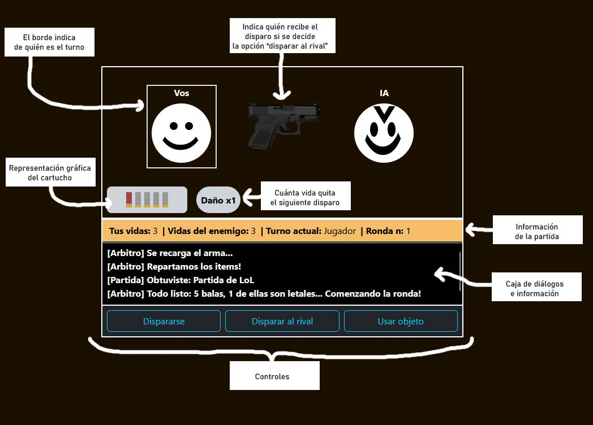

Guia Leandro Emanuel
Guia Leandro Emanuel
Tengo 21 años, actualmente estudio una tecnicatura universitaria en programación en UTNFRA.
Este trabajo práctico se hizo con el fin de practicar el manejo de Angular y TypeScript junto con distintos servicios de Firebase.
El enunciado del atrabajo puede encontrarse en este link.
Bueno, para este trabajo me decidí por hacer un rip-off del juego Buckshot Roulette. El juego tiene las mísmas reglas básicas de la mítica "Ruleta rusa", sin embargo, cuenta con algunos cambios interesantes. Ahora los jugadores no sólo pueden dispararse a ellos mismos como siempre, en esta versión también tienen la opción de dispararle a su rival si así lo desean. Por último, se le brindará a cada jugador con distintos ítems (o powerUps) para cambiar el rumbo de la partida.
El juego se basa en ganar una partida, la cual consta de una cantidad indefinida de rondas.
Al inicio de cada ronda:
En cada turno el jugador (o la IA, dependiendo de quién es el turno) podrá elegir entre dispararse a sí mismo,
disparar a su rival, o utilizar un objeto.
Aquel que pierda todas sus vidas pierde. En caso de que ambos jugadores tengan una vida, se inicia la muerte súbita (no se admiten ítems que curen a los jugadores).
